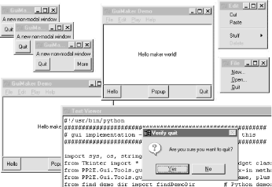

| I l@ve RuBoard |
|
9.2 Advanced GUI Coding TechniquesIf you read Chapter 8, you know that the code used to construct non-trivial GUIs can become large if we make each widget by hand. Not only do we have to manually link up all the widgets, but there are dozens of options to be set and remember. If we stick to this strategy, GUI programming often becomes an exercise in typing, or at least in cut-and-paste text editor operations. 9.2.1 GuiMixin: Shared Behavior in "Mixin" ClassesRather than doing each step by hand, a better idea is to wrap or automate as much of the GUI construction process as possible. One approach is to code functions that provide typical widget configurations; for instance, we could define a button function to handle configuration details and support most of the buttons we draw. Alternatively, we can implement common methods in a class and inherit them everywhere they are needed. Such classes are commonly called mixin classes, because their methods are "mixed in" with other classes. Mixins serve to package generally useful tools as methods. The concept is almost like importing a module, but mixin classes can access the subject instance, self, to utilize per-instance state and inherited methods. The script in Example 9-1 shows how. Example 9-1. PP2E\Gui\Tools\guimixin.py########################################################
# a "mixin" class for other frames: common methods for
# canned-dialogs, spawning programs, etc; must be mixed
# with a class derived from Frame for its quit method
########################################################
from Tkinter import *
from tkMessageBox import *
from tkFileDialog import *
from ScrolledText import ScrolledText
from PP2E.launchmodes import PortableLauncher, System
class GuiMixin:
def infobox(self, title, text, *args): # use standard dialogs
return showinfo(title, text) # *args for bkwd compat
def errorbox(self, text):
showerror('Error!', text)
def question(self, title, text, *args):
return askyesno(title, text)
def notdone(self):
showerror('Not implemented', 'Option not available')
def quit(self):
ans = self.question('Verify quit', 'Are you sure you want to quit?')
if ans == 1:
Frame.quit(self) # quit not recursive!
def help(self):
self.infobox('RTFM', 'See figure 1...') # override this better
def selectOpenFile(self, file="", dir="."): # use standard dialogs
return askopenfilename(initialdir=dir, initialfile=file)
def selectSaveFile(self, file="", dir="."):
return asksaveasfilename(initialfile=file, initialdir=dir)
def clone(self):
new = Toplevel( ) # make a new version of me
myclass = self.__class__ # instance's (lowest) class object
myclass(new) # attach/run instance to new window
def spawn(self, pycmdline, wait=0):
if not wait:
PortableLauncher(pycmdline, pycmdline)( ) # run Python progam
else:
System(pycmdline, pycmdline)( ) # wait for it to exit
def browser(self, filename):
new = Toplevel( ) # make new window
text = ScrolledText(new, height=30, width=90) # Text with scrollbar
text.config(font=('courier', 10, 'normal')) # use fixed-width font
text.pack( )
new.title("Text Viewer") # set window mgr attrs
new.iconname("browser")
text.insert('0.0', open(filename, 'r').read( ) ) # insert file's text
if __name__ == '__main__':
class TestMixin(GuiMixin, Frame): # stand-alone test
def __init__(self, parent=None):
Frame.__init__(self, parent)
self.pack( )
Button(self, text='quit', command=self.quit).pack(fill=X)
Button(self, text='help', command=self.help).pack(fill=X)
Button(self, text='clone', command=self.clone).pack(fill=X)
TestMixin().mainloop( )
Although Example 9-1 is geared towards GUIs, it's really about design concepts. The GuiMixin class implements common operations with standard interfaces that are immune to changes in implementation. In fact, the implementations of some of this class's method did change -- between the first and second editions of this book, old-style Dialog calls were replaced with the new Tk standard dialog calls. Because this class's interface hides such details, its clients did not have to be changed to use the new dialog techniques. As is, GuiMixin provides methods for common dialogs, window cloning, program spawning, text file browsing, and so on. We can add more methods to such a mixin later if we find ourselves coding the same methods repeatedly; they will all become available immediately everywhere this class is imported and mixed. Moreover, GuiMixin's methods can be inherited and used as is, or they can be redefined in subclasses. There are a few things to notice here:
The GuiMixin class is meant to be a library of reusable tool methods and is essentially useless by itself. In fact, it must generally be mixed with a Frame-based class to be used: quit assumes it's mixed with a Frame, and clone assumes it's mixed with a widget class. To satisfy such constraints this module's self-test code at the bottom combines GuiMixin with a Frame widget. Figure 9-1 shows the scene created by the self-test after pressing "clone" twice, and then "help" in one of the three copies. Figure 9-1. GuiMixin self-test code in actionWe'll see this class show up again as a mixin in later examples, too -- that's the whole point of code reuse, after all. 9.2.2 GuiMaker: Automating Menus and ToolbarsThe last section's mixin class makes common tasks simpler, but it still doesn't address the complexity of linking up widgets like menus and toolbars. Of course, if we had access to a GUI layout tool that generated Python code, this would not be an issue. We'd design our widgets interactively, press a button, and fill in the callback handler blanks. For now, a programming-based approach can work just as well. What we'd like is to be able to inherit something that does all the grunt work of construction for us, given a template for the menus and toolbars in a window. Here's one way it can be done -- using trees of simple objects. The class in Example 9-2 interprets data structure representations of menus and toolbars, and builds all the widgets automatically. Example 9-2. PP2E\Gui\Tools\guimaker.py###############################################################################
# An extended Frame that makes window menus and tool-bars automatically.
# Use GuiMakerFrameMenu for embedded components (makes frame-based menus).
# Use GuiMakerWindowMenu for top-level windows (makes Tk8.0 window menus).
# See the self-test code (and PyEdit) for an example layout tree format.
###############################################################################
import sys
from Tkinter import * # widget classes
from types import * # type constants
class GuiMaker(Frame):
menuBar = [] # class defaults
toolBar = [] # change per instance in subclasses
helpButton = 1 # set these in start( ) if need self
def __init__(self, parent=None):
Frame.__init__(self, parent)
self.pack(expand=YES, fill=BOTH) # make frame stretchable
self.start( ) # for subclass: set menu/toolBar
self.makeMenuBar( ) # done here: build menu-bar
self.makeToolBar( ) # done here: build tool-bar
self.makeWidgets( ) # for subclass: add middle part
def makeMenuBar(self):
"""
make menu bar at the top (Tk8.0 menus below)
expand=no, fill=x so same width on resize
"""
menubar = Frame(self, relief=RAISED, bd=2)
menubar.pack(side=TOP, fill=X)
for (name, key, items) in self.menuBar:
mbutton = Menubutton(menubar, text=name, underline=key)
mbutton.pack(side=LEFT)
pulldown = Menu(mbutton)
self.addMenuItems(pulldown, items)
mbutton.config(menu=pulldown)
if self.helpButton:
Button(menubar, text = 'Help',
cursor = 'gumby',
relief = FLAT,
command = self.help).pack(side=RIGHT)
def addMenuItems(self, menu, items):
for item in items: # scan nested items list
if item == 'separator': # string: add separator
menu.add_separator({})
elif type(item) == ListType: # list: disabled item list
for num in item:
menu.entryconfig(num, state=DISABLED)
elif type(item[2]) != ListType:
menu.add_command(label = item[0], # command:
underline = item[1], # add command
command = item[2]) # cmd=callable
else:
pullover = Menu(menu)
self.addMenuItems(pullover, item[2]) # sublist:
menu.add_cascade(label = item[0], # make submenu
underline = item[1], # add cascade
menu = pullover)
def makeToolBar(self):
"""
make button bar at bottom, if any
expand=no, fill=x so same width on resize
"""
if self.toolBar:
toolbar = Frame(self, cursor='hand2', relief=SUNKEN, bd=2)
toolbar.pack(side=BOTTOM, fill=X)
for (name, action, where) in self.toolBar:
Button(toolbar, text=name, command=action).pack(where)
def makeWidgets(self):
"""
make 'middle' part last, so menu/toolbar
is always on top/bottom and clipped last;
override this default, pack middle any side;
for grid: grid middle part in a packed frame
"""
name = Label(self,
width=40, height=10,
relief=SUNKEN, bg='white',
text = self.__class__.__name__,
cursor = 'crosshair')
name.pack(expand=YES, fill=BOTH, side=TOP)
def help(self):
"""
override me in subclass
"""
from tkMessageBox import showinfo
showinfo('Help', 'Sorry, no help for ' + self.__class__.__name__)
def start(self): pass # override me in subclass
###############################################################################
# For Tk 8.0 main window menubar, instead of a frame
###############################################################################
GuiMakerFrameMenu = GuiMaker # use this for embedded component menus
class GuiMakerWindowMenu(GuiMaker): # use this for top-level window menus
def makeMenuBar(self):
menubar = Menu(self.master)
self.master.config(menu=menubar)
for (name, key, items) in self.menuBar:
pulldown = Menu(menubar)
self.addMenuItems(pulldown, items)
menubar.add_cascade(label=name, underline=key, menu=pulldown)
if self.helpButton:
if sys.platform[:3] == 'win':
menubar.add_command(label='Help', command=self.help)
else:
pulldown = Menu(menubar) # linux needs real pulldown
pulldown.add_command(label='About', command=self.help)
menubar.add_cascade(label='Help', menu=pulldown)
###############################################################################
# Self test when file run stand-alone: 'python guimaker.py'
###############################################################################
if __name__ == '__main__':
from guimixin import GuiMixin # mixin a help method
menuBar = [
('File', 0,
[('Open', 0, lambda:0), # lambda:0 is a no-op
('Quit', 0, sys.exit)]), # use sys, no self here
('Edit', 0,
[('Cut', 0, lambda:0),
('Paste', 0, lambda:0)]) ]
toolBar = [('Quit', sys.exit, {'side': LEFT})]
class TestAppFrameMenu(GuiMixin, GuiMakerFrameMenu):
def start(self):
self.menuBar = menuBar
self.toolBar = toolBar
class TestAppWindowMenu(GuiMixin, GuiMakerWindowMenu):
def start(self):
self.menuBar = menuBar
self.toolBar = toolBar
class TestAppWindowMenuBasic(GuiMakerWindowMenu):
def start(self):
self.menuBar = menuBar
self.toolBar = toolBar # guimaker help, not guimixin
root = Tk( )
TestAppFrameMenu(Toplevel( ))
TestAppWindowMenu(Toplevel( ))
TestAppWindowMenuBasic(root)
root.mainloop( )
To make sense of this module, you have to be familiar with the menu fundamentals introduced in the last chapter. If you are, though, it's straightforward -- the GuiMaker class simply traverses the menu and toolbar structures and builds menu and toolbar widgets along the way. This module's self-test code includes a simple example of the data structures used to lay out menus and toolbars:
9.2.2.1 Subclass protocolsIn addition to menu and toolbar layouts, clients of this class can also tap into and customize the method and geometry protocols it implements:
9.2.2.2 GuiMaker classesIn return for conforming to GuiMaker protocols and templates, client subclasses get a Frame that knows how to automatically build up its own menus and toolbars from template data structures. If you read the last chapter's menu examples, you probably know that this is a big win in terms of reduced coding requirements. GuiMaker is also clever enough to export interfaces for both menu styles that we met in the last chapter:
Both classes build toolbars, export the same protocols, and expect to find the same template structures; they differ only in the way they process menu templates. In fact, one is simply a subclass of the other with a specialized menu maker method -- only top-level menu processing differs between the two styles (a Menu with Menu cascades, instead of a Frame with Menubuttons). 9.2.2.3 GuiMaker self-testLike GuiMixin, when we run Example 9-2 as a top-level program, we trigger the self-test logic at the bottom; Figure 9-2 shows the windows we get. Three windows come up, representing each of the self-test code's TestApp classes. All three have a menu and toolbar with the options specified in the template data structures created in the self-test code: File and Edit menu pull-downs, plus a Quit toolbar button, and a standard Help menu button. In the screen shot, one window's File menu has been torn off, and the Edit menu of another is being pulled down. Figure 9-2. GuiMaker self-test at workBecause of the superclass relationships coded, two of the three windows get their help callback handler from GuiMixin; TestAppWindowMenuBasic gets GuiMaker's instead. Notice that the order in which these two classes are mixed can be important: because both GuiMixin and Frame define a quit method, we need to list the class we want to get it from first in the mixed class's header line due to the left-to-right search rule of multiple inheritance. To select GuiMixin's methods, it should usually be listed before a superclass derived from real widgets. We'll put GuiMaker to more practical use in examples such as PyEdit later in this chapter. The next module shows another way to use GuiMaker's templates to build up a sophisticated interface. 9.2.3 BigGui: A Client Demo ProgramLet's look at a program that makes better use of the two automation classes we just wrote. In the module in Example 9-3, the Hello class inherits from both GuiMixin and GuiMaker. GuiMaker provides the link to the Frame widget, plus the menu/toolbar construction logic. GuiMixin provides extra common-behavior methods. Really, Hello is another kind of extended Frame widget because it is derived from GuiMaker. To get a menu and toolbar for free, it simply follows the protocols defined by GuiMaker -- it sets the menuBar and toolBar attributes in its start method, and overrides makeWidgets to put a label in the middle. Example 9-3. PP2E\Gui\Tools\BigGui\big_gui.py#!/usr/bin/python
#########################################################
# gui implementation - combines maker, mixin, and this
#########################################################
import sys, os, string
from Tkinter import * # widget classes
from PP2E.Gui.Tools.guimixin import * # mix-in methods
from PP2E.Gui.Tools.guimaker import * # frame, plus menu/toolbar builder
from find_demo_dir import findDemoDir # Python demos search
class Hello(GuiMixin, GuiMakerWindowMenu): # or GuiMakerFrameMenu
def start(self):
self.hellos = 0
self.master.title("GuiMaker Demo")
self.master.iconname("GuiMaker")
self.menuBar = [ # a tree: 3 pulldowns
('File', 0, # (pull-down)
[('New...', 0, self.notdone), # [menu items list]
('Open...', 0, self.fileOpen),
('Quit', 0, self.quit)] # label,underline,action
),
('Edit', 0,
[('Cut', -1, self.notdone), # no underline|action
('Paste',-1, self.notdone), # lambda:0 works too
'separator', # add a separator
('Stuff', -1,
[('Clone', -1, self.clone), # cascaded submenu
('More', -1, self.more)]
),
('Delete', -1, lambda:0),
[5]] # disable 'delete'
),
('Play', 0,
[('Hello', 0, self.greeting),
('Popup...', 0, self.dialog),
('Demos', 0,
[('Hanoi', 0,
lambda x=self:
x.spawn(findDemoDir( ) + '\guido\hanoi.py', wait=0)),
('Pong', 0,
lambda x=self:
x.spawn(findDemoDir( ) + '\matt\pong-demo-1.py', wait=0)),
('Other...', -1, self.pickDemo)]
)]
)]
self.toolBar = [
('Quit', self.quit, {'side': RIGHT}), # add 3 buttons
('Hello', self.greeting, {'side': LEFT}),
('Popup', self.dialog, {'side': LEFT, 'expand':YES}) ]
def makeWidgets(self): # override default
middle = Label(self, text='Hello maker world!', width=40, height=10,
cursor='pencil', bg='white', relief=SUNKEN)
middle.pack(expand=YES, fill=BOTH)
def greeting(self):
self.hellos = self.hellos + 1
if self.hellos % 3:
print "hi"
else:
self.infobox("Three", 'HELLO!') # on every third press
def dialog(self):
button = self.question('OOPS!',
'You typed "rm*" ... continue?',
'questhead', ('yes', 'no', 'help'))
[lambda:0, self.quit, self.help][button]( )
def fileOpen(self):
pick = self.selectOpenFile(file='big_gui.py')
if pick:
self.browser(pick) # browse my source file, or other
def more(self):
new = Toplevel( )
Label(new, text='A new non-modal window').pack( )
Button(new, text='Quit', command=self.quit).pack(side=LEFT)
Button(new, text='More', command=self.more).pack(side=RIGHT)
def pickDemo(self):
pick = self.selectOpenFile(dir=findDemoDir( )+'\guido')
if pick:
self.spawn(pick, wait=0) # spawn any python program
if __name__ == '__main__': Hello().mainloop( ) # make one, run one
This script lays out a fairly large menu and toolbar structure that we'll see in moment. It also adds callback methods of its own that print stdout messages, pop up text file browsers and new windows, and run other programs. Many of the callbacks don't do much more than run the notDone method inherited from GuiMixin, though; this code is intended mostly as a GuiMaker and GuiMixin demo. The big_gui script is almost a complete program, but not quite: it relies on a utility module to search for canned demo programs that come packaged with the Python full source distribution. (These demos are not part of this book's example collection.) The Python source distribution might be unpacked anywhere on the host machine. Because of that, it's impossible to know where the demo directory is located (if it is present at all). But rather than expecting beginners to change the source code of this script to hardcode a path, the guessLocation tool in the Launcher module we met at the end of Chapter 4 is used to hunt for the demo directory (see Example 9-4). Flip back if you've forgotten how this works (though the beauty of code reuse is that it's often okay to forget). Example 9-4. PP2E\Gui\Tools\BigGui\find_demo_dir.py#########################################################
# search for demos shipped in Python source distribution;
# PATH and PP2EHOME won't help here, because these demos
# are not part of the standard install or the book's tree
#########################################################
import os, string, PP2E.Launcher
demoDir = None
myTryDir = ''
#sourceDir = r'C:\Stuff\Etc\Python-ddj-cd\distributions'
#myTryDir = sourceDir + r'\Python-1.5.2\Demo\tkinter'
def findDemoDir( ):
global demoDir
if not demoDir: # only searches on first call
if os.path.exists(myTryDir): # use hard-coded dir, or search
demoDir = myTryDir # save in global for next call
else:
print 'Searching for standard demos on your machine...'
path = PP2E.Launcher.guessLocation('hanoi.py')
if path:
demoDir = string.join(string.split(path, os.sep)[:-2], os.sep)
print 'Using demo dir:', demoDir
assert demoDir, 'Where is your demo directory?'
return demoDir
When big_gui is run as a top-level program, it creates a window with four menu pull-downs on top, and a three-button toolbar on the bottom, shown in Figure 9-3 along with some of the pop-up windows its callbacks create. The menus have separators, disabled entries, and cascading submenus, all as defined by the menuBar template. Figure 9-3. big_gui with various pop-upsFigure 9-4 shows this script's window again, after its Play pull-down has been used to launch two independently running instances of the hanoi.py demo script that is shipped in the Python source distribution and coded by Python creator Guido van Rossum. This demo shows a simple animation of solutions to the "Towers of Hanoi" puzzle -- a classic recursive problem popular on computer science quizzes (if you never heard of it, I'll spare you the gory details here). Figure 9-4. big_gui with spawned hanoi demos on the moveTo find this demo, the script searches directory trees on your machine rooted at common places; it was found on mine only by a last-resort traversal of my entire C: hard drive: C:\...\PP2E\Gui\Tools\BigGui>python big_gui.py Searching for standard demos on your machine... Searching for hanoi.py in C:\Program Files\Python Searching for hanoi.py in C:\PP2ndEd\examples\PP2E\Gui\Tools\BigGui Searching for hanoi.py in C:\Program Files Searching for hanoi.py in C:\ Using demo dir: C:\PP2ndEd\cdrom\Python1.5.2\SourceDistribution\Unpacked\Python- 1.5.2\Demo\tkinter C:\PP2ndEd\cdrom\Python1.5.2\SourceDistribution\Unpacked\Python-1.5.2\Demo\tkint er\guido\hanoi.py This search takes about 20 seconds on my 650 MHz Windows laptop, but is done only the first time you select one of these demos -- after a successful search, the find_demo_dir module caches away the directory name in a global variable for immediate retrieval the next time you start a demo. If you want to run demos from other directories (e.g., one of the book demos in the PP2E tree), select the Play menu's Other option to pop up a standard file selection dialog instead and navigate to the desired program's file. Finally, I should note that GuiMaker can be redesigned to use trees of embedded class instances that know how to apply themselves to the Tkinter widget tree being constructed, instead of branching on the types of items in template data structures. In the interest of space, though, we'll banish that extension to the land of suggested exercises in this edition. 9.2.4 ShellGui: Adding GUIs to Command-Line ToolsTo better show how things like the GuiMixin class can be of practical use, we need a more realistic application. Here's one: in Chapter 4, we saw simple scripts for packing and unpacking text files (see Section 4.5). The packapp.py script we met there, you'll recall, concatenates multiple text files into a single file, and unpackapp.py extracts the original files from the combined file. We ran these scripts in that chapter with manually typed command lines that weren't the most complex ever devised, but were complicated enough to be easily forgotten. Rather than requiring users of such tools to type cryptic commands at a shell, why not also provide an easy-to-use Tkinter GUI interface for running such programs? While we're at it, why not generalize the whole notion of running command-line tools from a GUI, to make it easy to support future tools, too? 9.2.4.1 A generic shell-tools displayExamples Example 9-5 through Example 9-8 are one concrete implementation of these artificially rhetorical musings. Because I wanted this to be a general-purpose tool that could run any command-line program, its design is factored into modules that become more application-specific as we go lower in the software hierarchy. At the top, things are about as generic as they can be, as shown in Example 9-5. Example 9-5. PP2E\Gui\ShellGui\shellgui.py.py#!/usr/local/bin/python
#####################################################################
# tools launcher; uses guimaker templates, guimixin std quit dialog;
# I am just a class library: run mytools script to display the gui;
#####################################################################
from Tkinter import * # get widgets
from PP2E.Gui.Tools.guimixin import GuiMixin # get quit, not done
from PP2E.Gui.Tools.guimaker import * # menu/toolbar builder
class ShellGui(GuiMixin, GuiMakerWindowMenu): # a frame + maker + mixins
def start(self): # use GuiMaker if component
self.setMenuBar( )
self.setToolBar( )
self.master.title("Shell Tools Listbox")
self.master.iconname("Shell Tools")
def handleList(self, event): # on listbox double-click
label = self.listbox.get(ACTIVE) # fetch selection text
self.runCommand(label) # and call action here
def makeWidgets(self): # add listbox in middle
sbar = Scrollbar(self) # cross link sbar, list
list = Listbox(self, bg='white') # or use Tour.ScrolledList
sbar.config(command=list.yview)
list.config(yscrollcommand=sbar.set)
sbar.pack(side=RIGHT, fill=Y) # pack 1st=clip last
list.pack(side=LEFT, expand=YES, fill=BOTH) # list clipped first
for (label, action) in self.fetchCommands( ): # add to list-box
list.insert(END, label) # and menu/toolbars
list.bind('<Double-1>', self.handleList) # set event handler
self.listbox = list
def forToolBar(self, label): # put on toolbar?
return 1 # default = all
def setToolBar(self):
self.toolBar = []
for (label, action) in self.fetchCommands( ):
if self.forToolBar(label):
self.toolBar.append((label, action, {'side': LEFT}))
self.toolBar.append(('Quit', self.quit, {'side': RIGHT}))
def setMenuBar(self):
toolEntries = []
self.menuBar = [
('File', 0, [('Quit', -1, self.quit)]), # pull-down name
('Tools', 0, toolEntries) # menu items list
] # label,underline,action
for (label, action) in self.fetchCommands( ):
toolEntries.append((label, -1, action)) # add app items to menu
###################################################
# delegate to template type-specific subclasses
# which delegate to app toolset-specific subclasses
###################################################
class ListMenuGui(ShellGui):
def fetchCommands(self): # subclass: set 'myMenu'
return self.myMenu # list of (label, callback)
def runCommand(self, cmd):
for (label, action) in self.myMenu:
if label == cmd: action( )
class DictMenuGui(ShellGui):
def fetchCommands(self): return self.myMenu.items( )
def runCommand(self, cmd): self.myMenu[cmd]( )
The ShellGui class in this module knows how to use the GuiMaker and GuiMix interfaces to construct a selection window that displays tool names in menus, a scrolled list, and a toolbar. It also provides an overridable forToolBar method that allows subclasses to specify which tools should and should not be added to the window's toolbar (the toolbar can get crowded in a hurry). However, it is deliberately ignorant about both the names of tools that should be displayed in those places, and the actions to be run when tool names are selected. Instead, ShellGui relies on the ListMenuGui and DictMenuGui subclasses in this file to provide a list of tool names from a fetchCommands method and dispatch actions by name in a runCommand method. These two subclasses really just serve to interface to application-specific tool sets laid out as lists or dictionaries, though; they are still naive about what tool names really go up on the GUI. That's by design, too -- because the tool sets displayed are defined by lower subclasses, we can use ShellGui to display a variety of different tool sets. 9.2.4.2 Application-specific tool set classesTo get to the actual tool sets, we need to go one level down. The module in Example 9-6 defines subclasses of the two type-specific ShellGui classes, to provide sets of available tools in both list and dictionary format (you would normally need only one, but this module is meant for illustration). This is also the module that is actually run to kick off the GUI -- the shellgui module is a class library only. Example 9-6. PP2E\Gui\ShellGui\mytools.py#!/usr/local/bin/python
from shellgui import * # type-specific shell interfaces
from packdlg import runPackDialog # dialogs for data entry
from unpkdlg import runUnpackDialog # they both run app classes
class TextPak1(ListMenuGui):
def __init__(self):
self.myMenu = [('Pack', runPackDialog),
('Unpack', runUnpackDialog), # simple functions
('Mtool', self.notdone)] # method from guimixin
ListMenuGui.__init__(self)
def forToolBar(self, label):
return label in ['Pack', 'Unpack']
class TextPak2(DictMenuGui):
def __init__(self):
self.myMenu = {'Pack': runPackDialog, # or use input here...
'Unpack': runUnpackDialog, # instead of in dialogs
'Mtool': self.notdone}
DictMenuGui.__init__(self)
if __name__ == '__main__': # self-test code...
from sys import argv # 'menugui.py list|^'
if len(argv) > 1 and argv[1] == 'list':
print 'list test'
TextPak1().mainloop( )
else:
print 'dict test'
TextPak2().mainloop( )
The classes in this module are specific to a particular tools set; to display a different set of tool names, simply code and run a new subclass. By separating out application logic into distinct subclasses and modules like this, software can become widely reusable. Figure 9-5 shows the main ShellGui window created when the mytools script is run with its dictionary-based menu layout class on Windows, along with menu tear-offs so you can see what they contain. This window's menu and toolbar are built by GuiMaker, and its Quit and Help buttons and menu selections trigger quit and help methods inherited from GuiMixin through the ShellGui module's superclasses. Are you starting to see why this book preaches code reuse so often? Figure 9-5. mytools items in a ShellGui window9.2.4.3 Adding GUI frontends to command linesThe callback actions named within the prior module's classes, though, should normally do something GUI-oriented. Because the original file packing and unpacking scripts live in the world of text-based streams, we need to code wrappers around them that accept input parameters from more GUI-minded users. The module in Example 9-7 uses the custom modal dialog techniques we studied in Chapter 7, to pop up an input display to collect pack script parameters. Its runPackDialog function is the actual callback handler invoked when tool names are selected in the main ShellGui window. Example 9-7. PP2E\Gui\ShellGui\packdlg.py.# added file select dialogs, empties test; could use grids
import string
from glob import glob # filename expansion
from Tkinter import * # gui widget stuff
from tkFileDialog import * # file selector dialog
from PP2E.System.App.Clients.packapp import PackApp # use pack class
def runPackDialog( ):
s1, s2 = StringVar(), StringVar( ) # run class like a function
PackDialog(s1, s2) # pop-up dialog: sets s1/s2
output, patterns = s1.get(), s2.get( ) # whether 'ok' or wm-destroy
if output != "" and patterns != "":
patterns = string.split(patterns)
filenames = []
for sublist in map(glob, patterns): # do expansion manually
filenames = filenames + sublist # Unix does auto on command-line
print 'PackApp:', output, filenames
app = PackApp(ofile=output) # run with redirected output
app.args = filenames # reset cmdline args list
app.main( ) # should show msgs in gui too
class PackDialog(Toplevel):
def __init__(self, target1, target2):
Toplevel.__init__(self) # a new top-level window
self.title('Enter Pack Parameters') # 2 frames plus a button
f1 = Frame(self)
l1 = Label(f1, text='Output file?', relief=RIDGE, width=15)
e1 = Entry(f1, relief=SUNKEN)
b1 = Button(f1, text='browse...')
f1.pack(fill=X)
l1.pack(side=LEFT)
e1.pack(side=LEFT, expand=YES, fill=X)
b1.pack(side=RIGHT)
b1.config(command= (lambda x=target1: x.set(askopenfilename( ))) )
f2 = Frame(self)
l2 = Label(f2, text='Files to pack?', relief=RIDGE, width=15)
e2 = Entry(f2, relief=SUNKEN)
b2 = Button(f2, text='browse...')
f2.pack(fill=X)
l2.pack(side=LEFT)
e2.pack(side=LEFT, expand=YES, fill=X)
b2.pack(side=RIGHT)
b2.config(command=
(lambda x=target2: x.set(x.get() +' '+ askopenfilename( ))) )
Button(self, text='OK', command=self.destroy).pack( )
e1.config(textvariable=target1)
e2.config(textvariable=target2)
self.grab_set( ) # make myself modal:
self.focus_set( ) # mouse grab, keyboard focus, wait...
self.wait_window( ) # till destroy; else returns to caller now
if __name__ == '__main__':
root = Tk( )
Button(root, text='pop', command=runPackDialog).pack(fill=X)
Button(root, text='bye', command=root.quit).pack(fill=X)
root.mainloop( )
When run, this script makes the input form shown in Figure 9-6. Users may either type input and output filenames into the entry fields, or press the "browse..." buttons to pop up standard file selection dialogs. They can also enter filename patterns -- the manual glob.glob call in this script expands filename patterns to match names and filters out nonexistent input filenames. The Unix command line does this pattern expansion automatically when running PackApp from a shell, but Windows does not (see Chapter 2, for more details). Figure 9-6. The packdlg input formWhen the form is filled in and submitted with its OK button, parameters are finally passed to an instance of the PackApp class we wrote in Chapter 4 to do file concatenations. The GUI interface to the unpacking script is simpler, because there is only one input field -- the name of the packed file to scan. The script in Example 9-8 generated the input form window shown in Figure 9-7. Example 9-8. PP2E\Gui\ShellGui\unpkdlg.py# added file select dialog, handles cancel better
from Tkinter import * # widget classes
from tkFileDialog import * # file open dialog
from PP2E.System.App.Clients.unpackapp import UnpackApp # use unpack class
def runUnpackDialog( ):
input = UnpackDialog( ).input # get input from GUI
if input != '': # do non-gui file stuff
print 'UnpackApp:', input
app = UnpackApp(ifile=input) # run with input from file
app.main( ) # execute app class
class UnpackDialog(Toplevel):
def __init__(self): # a function would work too
Toplevel.__init__(self) # resizable root box
self.input = '' # a label and an entry
self.title('Enter Unpack Parameters')
Label(self, text='input file?', relief=RIDGE, width=11).pack(side=LEFT)
e = Entry(self, relief=SUNKEN)
b = Button(self, text='browse...')
e.bind('<Key-Return>', self.gotit)
b.config(command=(lambda x=e: x.insert(0, askopenfilename( ))))
b.pack(side=RIGHT)
e.pack(side=LEFT, expand=YES, fill=X)
self.entry = e
self.grab_set( ) # make myself modal
self.focus_set( )
self.wait_window( ) # till I'm destroyed on return->gotit
def gotit(self, event): # on return key: event.widget==Entry
self.input = self.entry.get( ) # fetch text, save in self
self.destroy( ) # kill window, but instance lives on
if __name__ == "__main__":
Button(None, text='pop', command=runUnpackDialog).pack( )
mainloop( )
The "browse..." button in Figure 9-7 pops up a file selection dialog just like the packdlg form. Rather than an OK button, this dialog binds the enter key-press event to kill the window and end the modal wait state pause; on submission, the name of the file is passed to an instance of the UnpackApp class shown in Chapter 4 to perform the actual file scan process. Figure 9-7. The unpkdlg input formThis all works as advertised -- by making command-line tools available in graphical form like this, they become much more attractive to users accustomed to the GUI way of life. Still, there are two aspects of this design that seem prime for improvement. First of all, both of the input dialogs use custom code to render a unique appearance, but we could probably simplify them substantially by importing a common form-builder module instead. We met generalized form builder code in Chapter 7 and Chapter 8, and we'll meet more later; see the form.py module in Chapter 10, for pointers on genericizing form construction, too. Secondly, at the point where the user submits input data in either form dialog, we've lost the GUI trail -- PackApp and UnpackApp messages still show up in the stdout console window: C:\...\PP2E\Gui\ShellGui\test>python ..\mytools.py dict test PackApp: packed.all ['spam.txt', 'eggs.txt', 'ham.txt'] packing: spam.txt packing: eggs.txt packing: ham.txt UnpackApp: packed.all creating: spam.txt creating: eggs.txt creating: ham.txt We can do better here, by redirecting stdout to an object that throws text up in a GUI window as it is received. You'll have to read the next section to see how. 9.2.5 GuiStreams: Redirecting Streams to GUI WidgetsThe script in Example 9-9 arranges to map input and output sources to pop-up windows in a GUI application, much as we did with strings in the stream redirection topics in Chapter 2. Although this module is really just a first-cut prototype and needs improvement itself (e.g., each input line request pops up a new input dialog), it demonstrates the concepts in general. Its GuiOutput and GuiInput objects define methods that allow them to masquerade as files in any interface that expects a file. As we learned earlier in Chapter 2, this includes standard stream processing tools like print, raw_input, and explicit read and write calls. The redirectedGuiFunc function in this module uses this plug-and-play compatibility to run a function with its standard input and output streams mapped completely to pop-up windows instead of the console window (or wherever streams would otherwise be mapped). Example 9-9. PP2E\Gui\Tools\guiStreams.py##############################################################################
# first-cut implementation of file-like classes that can be used to redirect
# input and output streams to GUI displays; as is, input comes from a common
# dialog popup (a single output+input interface or a persistent Entry field
# for input would be better); this also does not properly span lines for read
# requests with a byte count > len(line); see guiStreamsTools.py for more;
##############################################################################
from Tkinter import *
from ScrolledText import ScrolledText
from tkSimpleDialog import askstring
class GuiOutput:
def __init__(self, parent=None):
self.text = None
if parent: self.popupnow(parent) # popup now or on first write
def popupnow(self, parent=None): # in parent now, Toplevel later
if self.text: return
self.text = ScrolledText(parent or Toplevel( ))
self.text.config(font=('courier', 9, 'normal'))
self.text.pack( )
def write(self, text):
self.popupnow( )
self.text.insert(END, str(text))
self.text.see(END)
self.text.update( )
def writelines(self, lines): # lines already have '\n'
for line in lines: self.write(line) # or map(self.write, lines)
class GuiInput:
def __init__(self):
self.buff = ''
def inputLine(self):
line = askstring('GuiInput', 'Enter input line + <crlf> (cancel=eof)')
if line == None:
return '' # popup dialog for each line
else: # cancel button means eof
return line + '\n' # else add end-line marker
def read(self, bytes=None):
if not self.buff:
self.buff = self.inputLine( )
if bytes: # read by byte count
text = self.buff[:bytes] # doesn't span lines
self.buff = self.buff[bytes:]
else:
text = '' # read all till eof
line = self.buff
while line:
text = text + line
line = self.inputLine( ) # until cancel=eof=''
return text
def readline(self):
text = self.buff or self.inputLine( ) # emulate file read methods
self.buff = ''
return text
def readlines(self):
lines = [] # read all lines
while 1:
next = self.readline( )
if not next: break
lines.append(next)
return lines
def redirectedGuiFunc(func, *pargs, **kargs):
import sys
saveStreams = sys.stdin, sys.stdout # map func streams to popups
sys.stdin = GuiInput( ) # pops up dialog as needed
sys.stdout = GuiOutput( ) # new output window per call
sys.stderr = sys.stdout
result = apply(func, pargs, kargs) # this is a blocking func call
sys.stdin, sys.stdout = saveStreams
return result
def redirectedGuiShellCmd(command):
import os
input = os.popen(command, 'r')
output = GuiOutput( )
def reader(input, output): # show a shell command's
while 1: # standard output in a new
line = input.readline( ) # popup text box widget
if not line: break
output.write(line)
reader(input, output)
if __name__ == '__main__':
import string
def makeUpper( ): # use standard streams
while 1:
try:
line = raw_input('Line? ')
except:
break
print string.upper(line)
print 'end of file'
def makeLower(input, output): # use explicit files
while 1:
line = input.readline( )
if not line: break
output.write(string.lower(line))
print 'end of file'
root = Tk( )
Button(root, text='test streams',
command=lambda: redirectedGuiFunc(makeUpper)).pack(fill=X)
Button(root, text='test files ',
command=lambda: makeLower(GuiInput(), GuiOutput( )) ).pack(fill=X)
Button(root, text='test popen ',
command=lambda: redirectedGuiShellCmd('dir *')).pack(fill=X)
root.mainloop( )
As coded here, GuiOutput either attaches a ScrolledText to a parent container, or pops up a new top-level window to serve as the container on the first write call. GuiInput pops up a new standard input dialog every time a read request requires a new line of input. Neither one of these policies is ideal for all scenarios (input would be better mapped to a more long-lived widget), but they prove the general point. Figure 9-8 shows the scene generated by this script's self-test code, after capturing the output of a shell dir listing command (on the left), and two interactive loop tests (the one with "Line?" prompts and uppercase letters represents the makeUpper streams test). An input dialog has just popped up for a new makeLower files test. Figure 9-8. guiStreams routing streams to pop-up windows9.2.5.1 Using redirection for the packing scriptsNow, to use such redirection tools to map command-line script output back to a GUI, simply run calls and command lines with the two redirected functions in this module. Example 9-10 shows one way to wrap the packing operation to force its printed output to appear in a pop-up window when generated, instead of the console. Example 9-10. PP2E\Gui\ShellGui\packdlg-redirect.py# wrap command-line script in GUI redirection tool to popup its output
from Tkinter import *
from packdlg import runPackDialog
from PP2E.Gui.Tools.guiStreams import redirectedGuiFunc
def runPackDialog_Wrapped( ):
redirectedGuiFunc(runPackDialog) # wrap entire callback handler
if __name__ == '__main__':
root = Tk( )
Button(root, text='pop', command=runPackDialog_Wrapped).pack(fill=X)
root.mainloop( )
You can run this script directly to test its effect, without bringing up the ShellGui window. Figure 9-9 shows the resulting stdout window after the pack input dialog is dismissed. This window pops up as soon as script output is generated, and is a bit more GUI user-friendly than hunting for messages in a console. You can similarly code the unpack parameters dialog to route its output to a pop-up too.[2] In fact, you can use this technique to route the output of any function call or command line to a pop-up window; as usual, the notion of compatible object interfaces are at the heart of much of Python's flexibility.
Figure 9-9. Routing script outputs to GUI pop-ups9.2.6 Reloading GUI Callback Handlers DynamicallyOne last GUI programming technique merits a quick look here. The Python reload function lets you dynamically change and reload a program's modules without stopping the program. For instance, you can bring up a text editor window to change the source code of selected parts of a system while it is running and see those changes show up immediately after reloading the changed module. This is a powerful feature, especially for developing programs that take a long time to restart. Programs that connect to databases or network servers, initialize large objects, or travel through a long series of steps to retrigger a callback are prime candidates for reload. It can shave substantial time from the development cycle. The catch for GUIs, though, is that because callback handlers are registered as object references instead of module and object names, reloads of callback handler functions are ineffective after the callback has been registered. The Python reload operation works by changing a module object's contents in place. Because Tkinter stores a pointer to the registered handler object directly, though, it is oblivious to any reloads of the module that the handler came from. That is, Tkinter will still reference a module's old objects even after the module is reloaded and changed. This is a subtle thing, but you really only need to remember that you must do something special to reload callback handler functions dynamically. Not only do you need to explicitly request reloading of the modules that you change, but you must also generally provide an indirection layer that routes callbacks from registered objects to modules, so that reloads have impact. For example, the script in Example 9-11 goes the extra mile to indirectly dispatch callbacks to functions in an explicitly reloaded module. The callback handlers registered with Tkinter are method objects that do nothing but reload and dispatch again. Because the true callback handler functions are fetched through a module object, reloading that module makes the latest versions of the functions accessible. Example 9-11. PP2E\Gui\Tools\Reload\rad.pyfrom Tkinter import *
import actions # get initial callback handlers
class Hello(Frame):
def __init__(self, master=None):
Frame.__init__(self, master)
self.pack( )
self.make_widgets( )
def make_widgets(self):
Button(self, text='message1', command=self.message1).pack(side=LEFT)
Button(self, text='message2', command=self.message2).pack(side=RIGHT)
def message1(self):
reload(actions) # need to reload actions module before calling
actions.message1( ) # now new version triggered by pressing button
def message2(self):
reload(actions) # changes to actions.py picked up by reload
actions.message2(self) # call the most recent version; pass self
def method1(self):
print 'exposed method...' # called from actions function
Hello().mainloop( )
When run, this script makes a two-button window that triggers the message1 and message2 methods. Example 9-12 contains the actual callback handlers' code. Its functions receive a self argument that gives access back to the Hello class object, as though these were real methods. You can change this file any number of times while the rad script's GUI is active; each time you do so, you'll change the behavior of the GUI when a button press occurs. Example 9-12. PP2E\Gui\Tools\Reload\actions.py# callback handlers: reloaded each time triggered
def message1( ): # change me
print 'spamSpamSPAM' # could build a dialog...
def message2(self):
print 'Ni! Ni!' # change me
self.method1( ) # access the 'Hello' instance...
Try running rad and editing the messages printed by actions in another window; you should see your new messages printed in the stdout console window each time the GUI's buttons are pressed. This example is deliberately simple to illustrate the concept, but the actions reloaded like this in practice might build pop-up dialogs, new top-level windows, and so on. Reloading the code that creates such windows would also let us dynamically change their appearances. There are other ways to change a GUI while it's running. For instance, we saw in Chapter 8 that appearances can be altered at any time by calling the widget config method, and widgets can be added and deleted from a display dynamically with methods like pack_forget and pack (and their grid manager relatives). Furthermore, passing a new command=action option setting to a widget's config method might reset a callback handler to a new action object on the fly; with enough support code, this may be a viable alternative to the indirection scheme used above to make reloads more effective in GUIs. |
| I l@ve RuBoard |
|